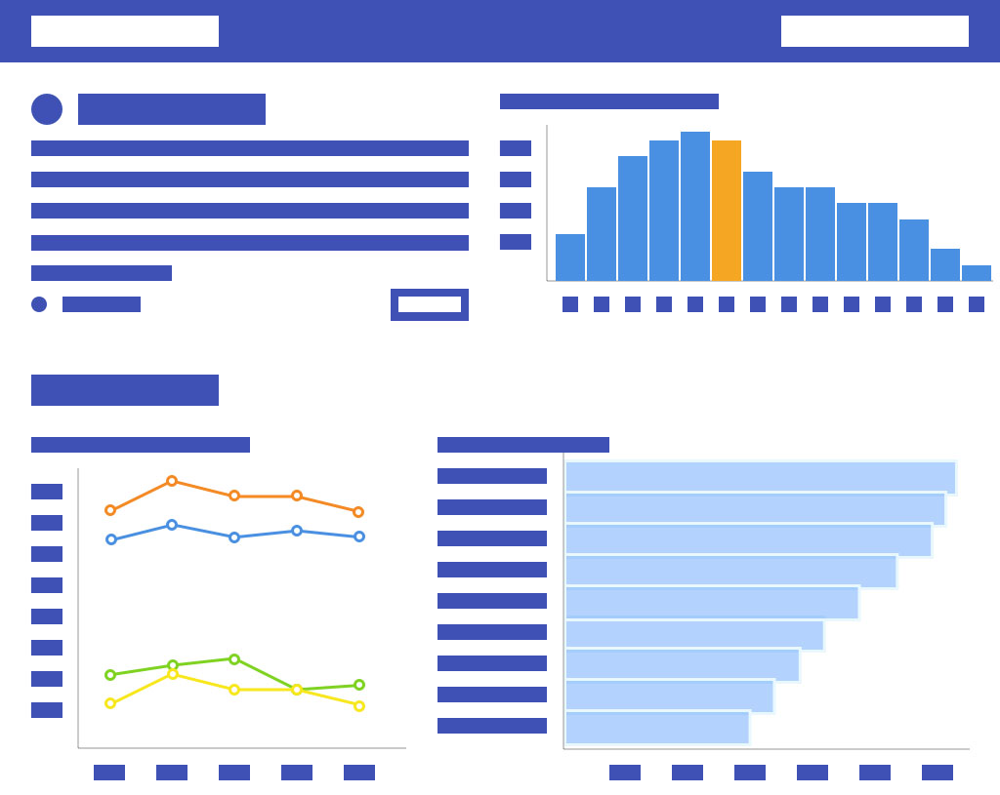
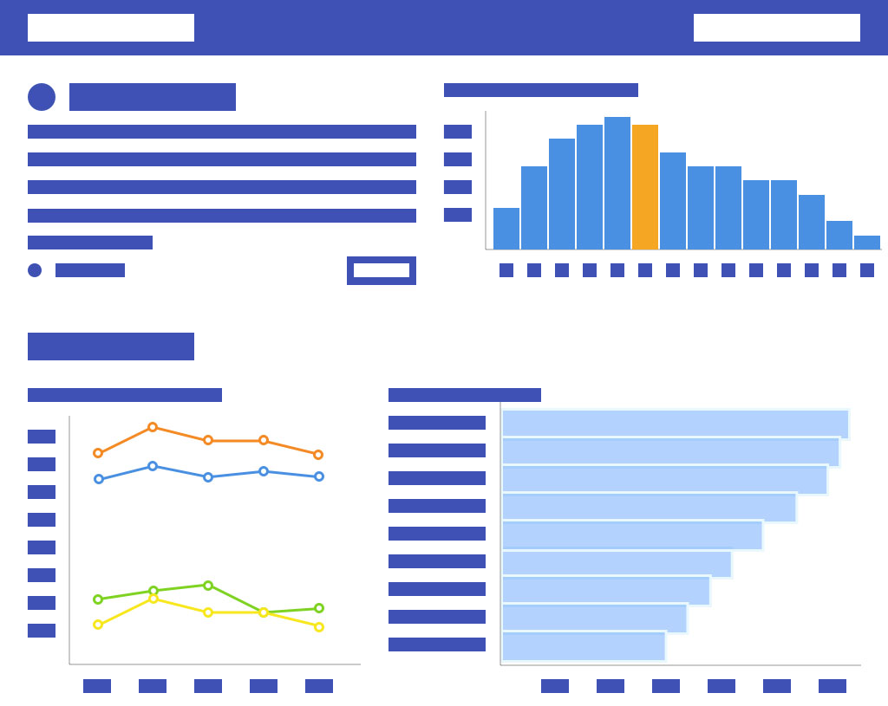

Easy to understand graphs
Information on Grade distribution and Enrollment
Answers questions like: Is this course graded on a curve? or In which term do most students take this course?
Selecting courses is an strenuous task. Students have to consider pre-reqs, major, year, instructors, timings, work load, and a lot more.
Currently students make those decisions based on information they get from advisors, friends, and online resources, all of which for the most part have an inherent bias.
ART provides last 5 years of course information to students in an easy to understand dashboard, so that they can make informed decision about their courses, and in turn career selection.
Answers questions like: Is this course graded on a curve? or In which term do most students take this course?
A reverse chronologically sorted list of instructors, who taught the course in which term. Students can also search the list, or sort it for whichever term they are interested in.
Lets students know which year students took this course and from which major. The tool also gives information on the school from which students belonged to, and their sex.
The tool provides information on courses students took before taking this course, along with this course, and lastly, the courses they took after graduating from the current course.
 
